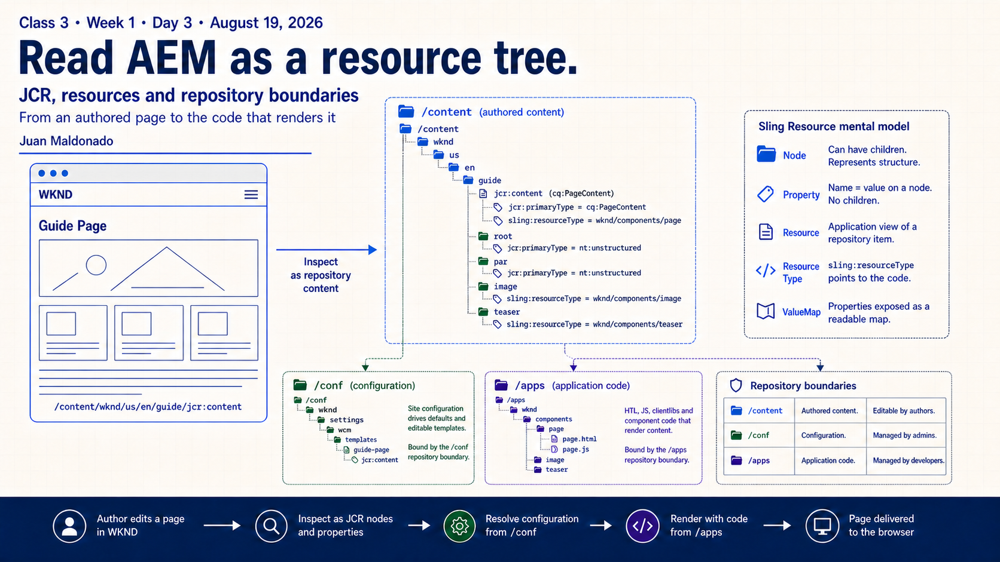
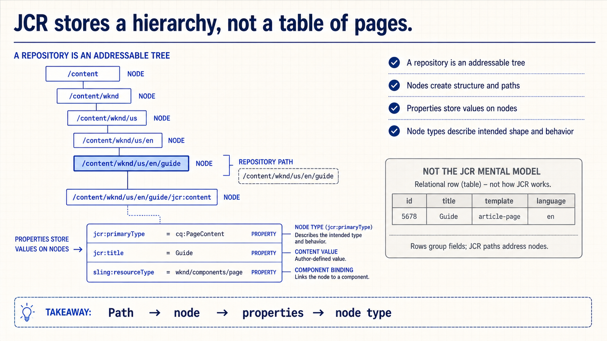
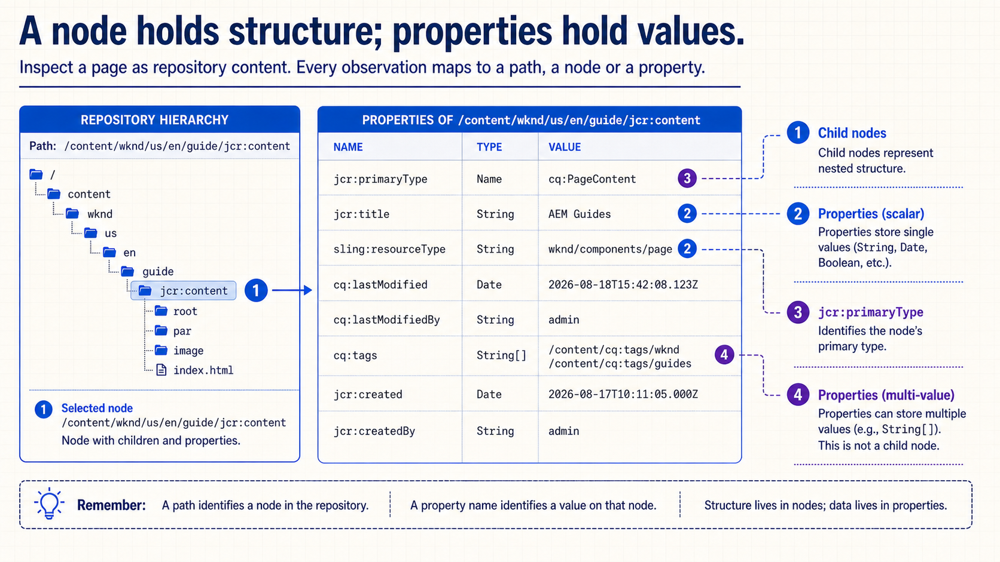
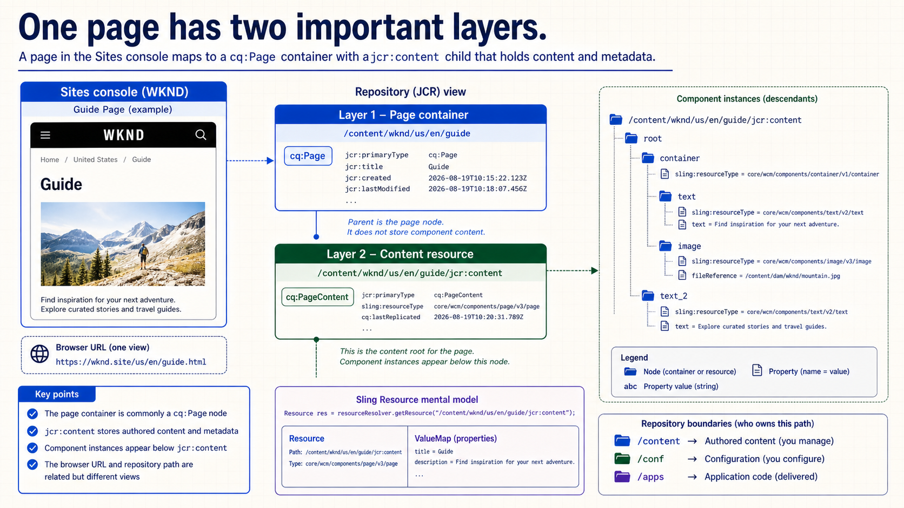
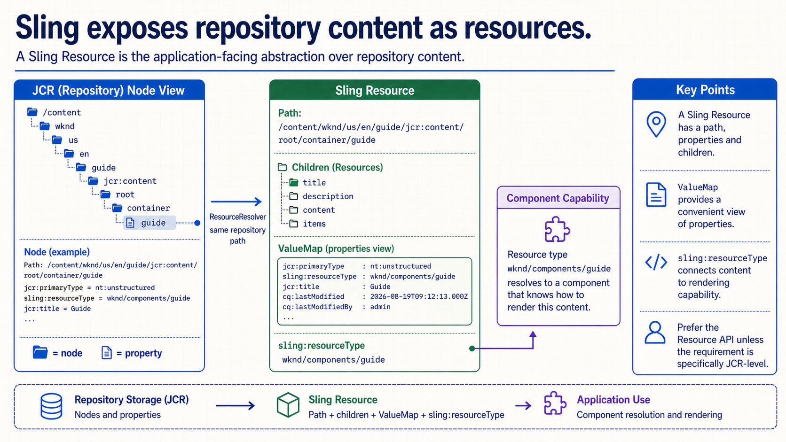
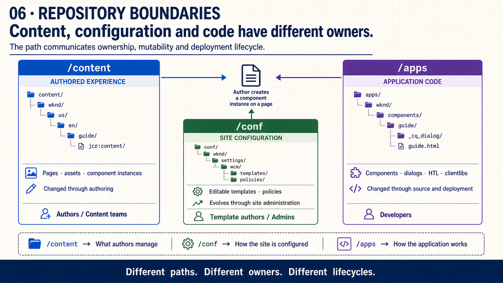
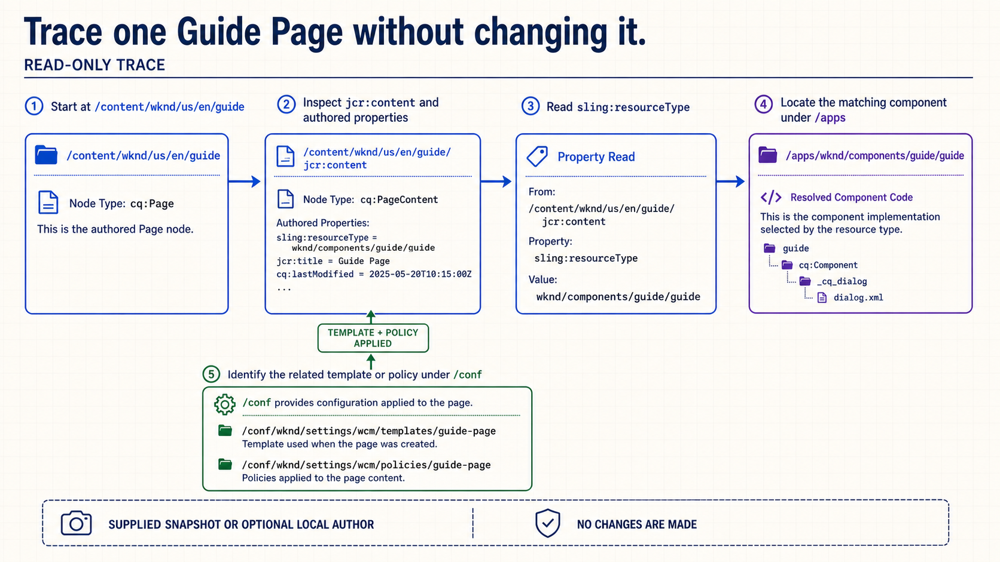
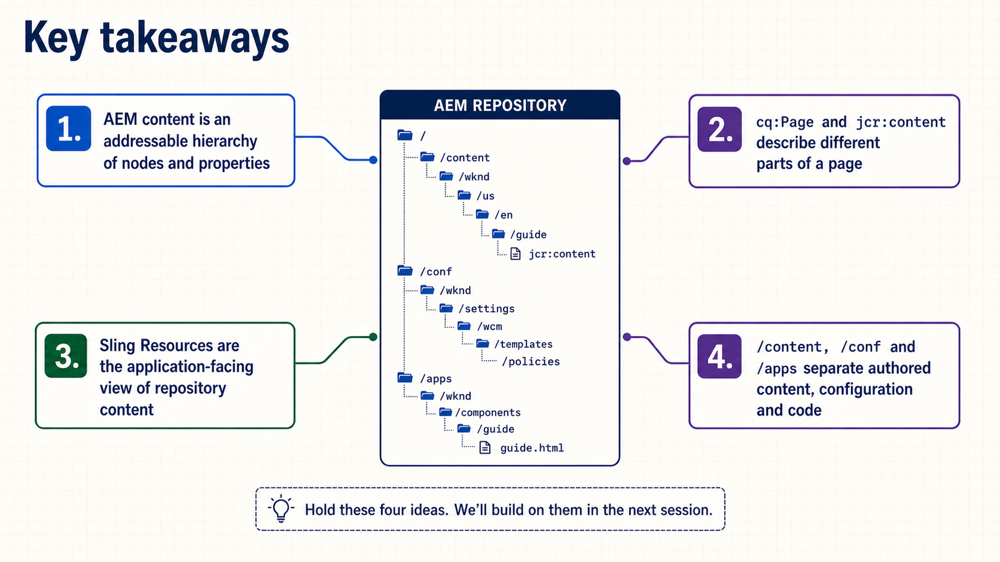
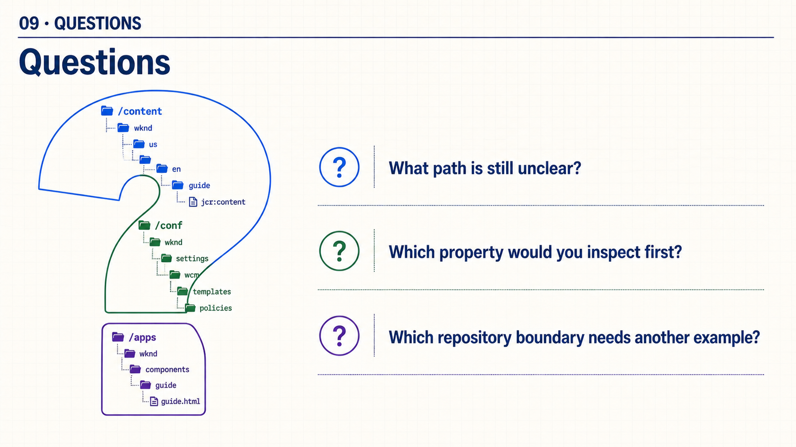

{kind=link}
Open: “What exact path would you inspect to explain this page?”
Class 3 · Week 1 · Day 3 · August 19, 2026
Trace an authored page across JCR structure, Sling Resources and the repository boundaries that own content, configuration and code.
/content, /conf or /apps.jcr:primaryType, jcr:title and sling:resourceType./apps and /conf.cq:Page container from its jcr:content resource;ValueMap application model;| Time | Activity | Facilitation |
|---|---|---|
| 0–3 | Retrieval | Ask: “Which module contains a dialog, and where is the author's value stored?” |
| 3–17 | Slides 1–6 | Build the hierarchy, page anatomy, Resource and boundary mental models. |
| 17–24 | Slide 7 | Trace a supplied Guide Page snapshot without changing the repository. |
| 24–27 | Slide 8 | Retrieve the four mental models using exact paths and properties. |
| 27–30 | Slide 9 | Questions only; no live demonstration dependency. |
Choose Copy slide as image and paste it into PowerPoint, or download the PNG.

Open: “What exact path would you inspect to explain this page?”

Emphasize: a repository tree is not merely a filesystem or a relational table.

Retrieve: ask whether cq:tags is a child node or a multi-value property.

Say explicitly: authored component values do not all live directly on the cq:Page node.

Emphasize: JCR Node and Sling Resource are related views, not identical application objects.

Ask: “Who changes this, and how does that change reach AEM?”

Trace: every arrow needs an observable path or property from the supplied snapshot.

Key takeaways: retrieve one exact path, node type, property and boundary.

Close: invite questions; do not depend on a live demonstration.
The complete talk track is available in speech.md.
jcr:primaryType and sling:resourceType./apps./conf.Evidence: one annotated screenshot or diagram containing the exact paths, two properties and a one-sentence lifecycle explanation for each repository boundary.
{kind=link}
{kind=link}
{kind=link}
{kind=link}
{kind=link}
{kind=link}
{kind=link}
{kind=link}